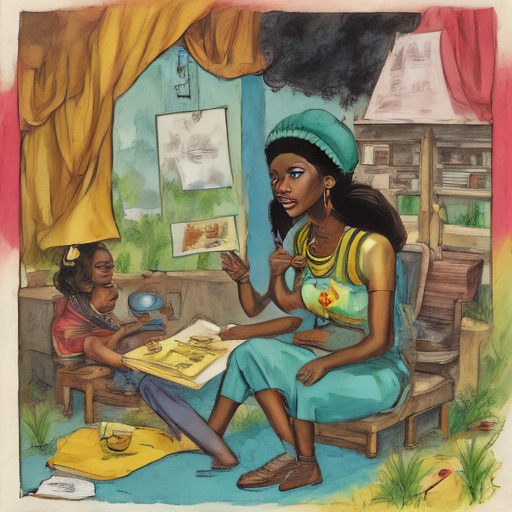

Today I woke up to news of Rapper Nicki Minaj speaking out about the risks associated with living in DR Congo. The country's unstable political situation and ongoing conflicts made her words more poignant than ever. I decided to write a poem inspired by her courage, reflecting on the resilience of those who face great personal challenges.

Keywords: Rapper Nicki Minaj, DR Congo, older workers risks
Fictional diary entry.